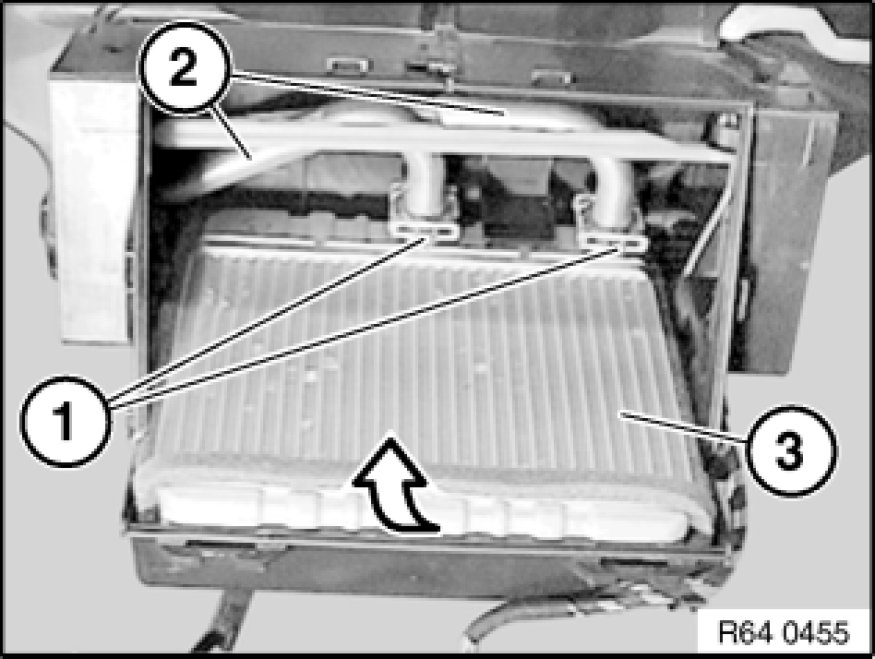

Heater Core: Service and Repair
64 11 208 - Replacing heater core

Warning!
Scalding hazard!
Work on the cooling system may only be carried out when it has cooled down.

Necessary preliminary tasks:
- Remove microfilter housing. Removing and Installing/Replacing Microfilter Housing
- Remove instrument panel trim. 51 45 030 Removing and Installing Instrument Panel Trim
- Remove heater housing assembly. Service and Repair

Recycling
Coolant emerges when coolant hoses are detached.
Have a suitable collecting container ready.
Catch and dispose of escaping coolant.
Observe country-specific waste-disposal regulations.
Detach hot water hoses (1) from heater and blow coolant out of heater core.

Note:
For purposes of clarity, the following operations are shown on the removed heater core.
Pull out temperature sensor (1) and unclip wiring harness (2) from holder.
Installation Note:
Ensure correct lead routing.
Release screw (1) and remove bracket (2) from double pipe.
Unclip retainers (3) and lift off cover for heating element (4).
Installation Note:
First insert lugs (5).

Remove retainers (1) and remove double pipe (2) towards top.
Raise heater core (3) at front and remove.
Installation Note:
Replace sealing rings, coat with anti-friction agent and make sure sealing rings and lines are correctly seated.
After installation:
- Venting cooling system and checking for water leaks